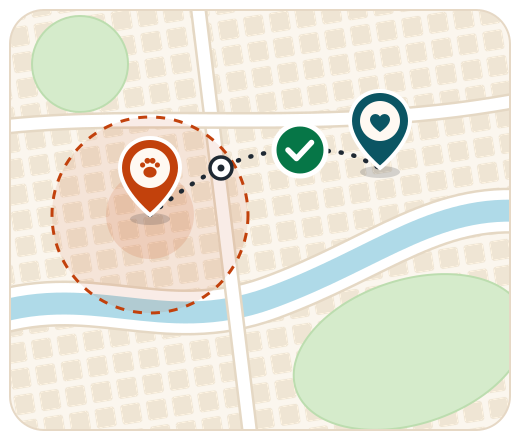

Achou um animal? Faça assim
- Deixe o animal em um lugar seguro, com água.
- Veja se há coleira ou plaquinha com contato.
- Peça a uma clínica veterinária para conferir se ele tem microchip.
- Registre no PetAlerta com o bairro e a data.
Grátis para quem perdeu ou achou
O PetAlerta compara avisos de animais perdidos e encontrados, mostra no mapa por onde eles podem ter andado e avisa quem mora por perto. Viu um animal em risco? Você também pode publicar um alerta.

Como funciona
Publique seu aviso de graça pelo site ou pelo assistente virtual do PetAlerta.
Informe espécie, porte, cor, bairro e data. Leva menos de dois minutos.
Comparamos animais perdidos e achados e mostramos as combinações mais parecidas.
Moradores recebem o alerta, enviam avistamentos e o mapa mostra por onde o animal pode estar.
O contato é feito pelo sistema, sem expor seu telefone. O caso entra nos números de impacto.
Recursos
Seu aviso pode ajudar uma família a reencontrar seu animal ou levar ajuda a um animal ferido ou abandonado.
Veja onde o animal foi visto, os avistamentos da vizinhança e a área por onde ele pode ter andado.
Espécie, porte, cor, bairro e data viram uma porcentagem de semelhança entre perdidos e achados.
Pelo site ou pelo nosso aplicativo, escreva ou grave um áudio contando a aparência do animal, onde ele foi visto e qualquer detalhe que ajude.
O mural mostra apenas o bairro. Quem tiver informações fala com você pelo PetAlerta, sem ver seu telefone ou endereço.
Viu um animal ferido ou abandonado? Envie um alerta: a plataforma encaminha o relato a ONGs, clínicas parceiras e órgãos públicos.
Os relatos ajudam a prefeitura a ver onde há mais casos e a planejar castração e prevenção de zoonoses.
Impacto no bairro
Números de simulação, usados para demonstrar o painel de impacto do protótipo.
Para quem encontrou um animal
Do outro lado, uma família espalha cartazes, chama pelo nome e confere o celular a cada minuto. Quando você registra o animal no PetAlerta, o seu gesto vira a pista que faltava para esse reencontro.
Para muita gente, principalmente quem mora sozinho, o animal é a principal companhia. Seu aviso encurta essa espera.
Longe da rua, ele fica protegido de atropelamentos, fome e frio enquanto a família não chega.
O sistema compara seu aviso com os animais perdidos na hora e marca no mapa a área onde a família provavelmente mora.
 Vizinho
do bem
Vizinho
do bem
“Um gato laranja apareceu no meu quintal. Registrei no PetAlerta e, no mesmo dia, o sistema mostrou que ele combinava com o Garfield, perdido a poucas ruas daqui. Ver o reencontro valeu a semana.”
Mural da vizinhança
Uma pista sua pode ser a que faltava para o reencontro.